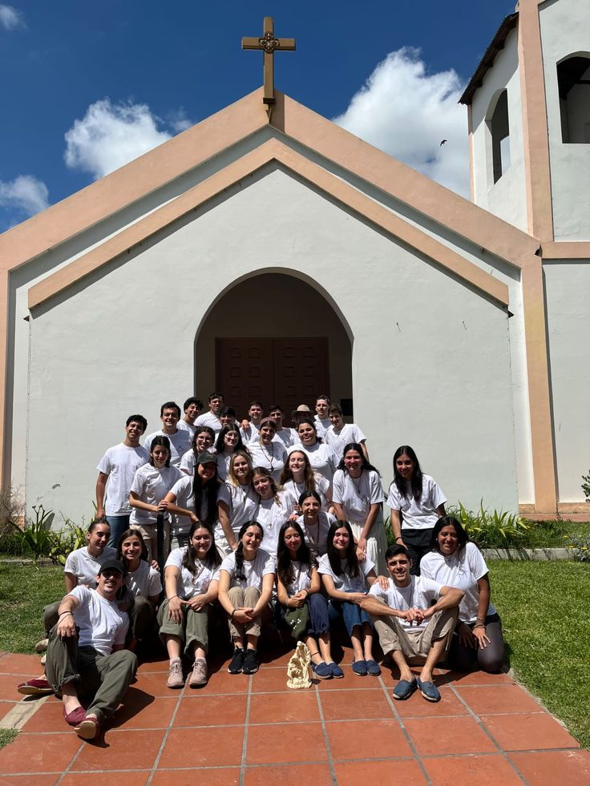

Objetivo de la Pastoral Juvenil

El objetivo principal es evangelizar, catequizar y guiar a los jóvenes en su proceso de maduración de fe y compromiso vocacional, permitiéndoles ser protagonistas en la construcción de la Civilización del Amor.